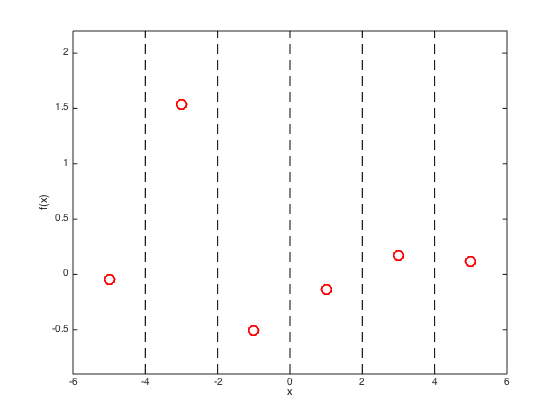
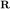
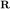
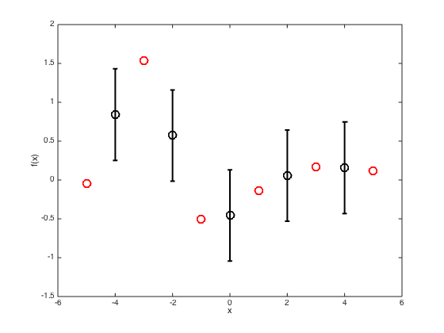
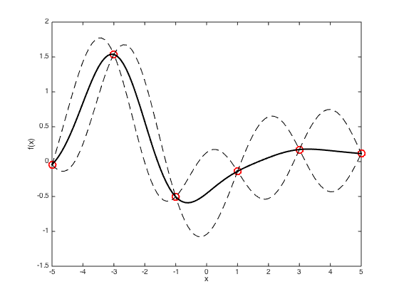
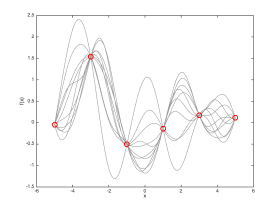

Contents
- gpprior.m
- Set the kernel parameters
- Define x
- Create the training covariance matrix
- Generate a true function from the GP prior with zero mean
- Define the test points - again on a uniform grid
- Plot the training data and show the position of the test points
- Compute the test covariance
- Compute the mean and covariance of the predictions
- Plot a smooth predictive function with a one sd window,
- Finally, plot some sample functions drawn from the predictive distribution
gpprior.m
Performs noise-free GP predictions
From A First Course in Machine Learning Simon Rogers, August 2016 [simon.rogers@glasgow.ac.uk]
clear all; close all;
Set the kernel parameters
Try varying these to see the effect
gamma = 0.5; alpha = 1.0;
Define x
In this example, we use uniformly spaced x values
x = [-5:2:5]; N = length(x);
Create the training covariance matrix
Firstly for the training data
C = zeros(N); C = alpha*exp(-gamma*(repmat(x,N,1) - repmat(x',1,N)).^2);
Generate a true function from the GP prior with zero mean
Define the GP mean
mu = zeros(N,1);
% Sample a function
true_f = mvnrnd(mu,C);
Define the test points - again on a uniform grid
testx = [-4,-2,0,2,4];
Plot the training data and show the position of the test points
figure(); hold off plot(x,true_f,'ro','markersize',10,'linewidth',2) xlabel('x'); ylabel('f(x)'); hold on % Change the ylimits to make it look nicer yl = ylim; yl(1) = 0.9*yl(1); yl(2) = 1.1*yl(2); ylim(yl); xlim([-6,6]) % Draw dashed lines at the test points for i = testx plot([i i],[yl(1) yl(2)],'k--'); end
Compute the test covariance
We need two matrices,  and  (see page 285)
and  (see page 285)
Ntest = length(testx); % The train by test matrix R = alpha*exp(-gamma*(repmat(x',1,Ntest) - repmat(testx,N,1)).^2); % The test by test matric Cstar = alpha*exp(-gamma*(repmat(testx,Ntest,1) - repmat(testx',1,Ntest)).^2);
Compute the mean and covariance of the predictions
This uses equation 8.3, p.285
figure() hold off % Plot the training data plot(x,true_f,'ro','markersize',10,'linewidth',2) % Compute the mean and covariance pred_mu = R'*inv(C)*true_f'; pred_cov = Cstar - R'*inv(C)*R; % Extract the standard deviations at the test points (square root of the % diagonal elements of the covariance matrix) pred_sd = sqrt(diag(pred_cov)); hold on % Plot the predictions as error bars errorbar(testx,pred_mu,pred_sd,'ko','linewidth',2,'markersize',10) xlim([-6 6]); xlabel('x') ylabel('f(x)')
Plot a smooth predictive function with a one sd window,
figure() hold off % plot the data plot(x,true_f,'ro','markersize',10,'linewidth',2) hold on % Define a new set of test x values testx = [-5:0.1:5]; Ntest = length(testx); % Compute R and Cstar again for the new test points R = exp(-gamma*(repmat(x',1,Ntest) - repmat(testx,N,1)).^2); Cstar = exp(-gamma*(repmat(testx,Ntest,1) - repmat(testx',1,Ntest)).^2); % Compute the predictive mean and covariance pred_mu = R'*inv(C)*true_f'; pred_cov = Cstar - R'*inv(C)*R; % Plot the predicted mean and plus and minus one sd plot(testx,pred_mu,'k','linewidth',2) plot(testx,pred_mu + sqrt(diag(pred_cov)),'k--') plot(testx,pred_mu - sqrt(diag(pred_cov)),'k--') xlabel('x') ylabel('f(x)')
Warning: Imaginary parts of complex X and/or Y arguments ignored Warning: Imaginary parts of complex X and/or Y arguments ignored
Finally, plot some sample functions drawn from the predictive distribution
figure(4) hold off % Plot the data plot(x,true_f,'ro','markersize',10,'linewidth',2) hold on xlim([-6 6]) % Draw 10 samples from the multivariate gaussian f_samps = mvnrnd(pred_mu,pred_cov,10); % plot them plot(testx,f_samps,'k','color',[0.6 0.6 0.6]) % plot the original training data plot(x,true_f,'ro','markersize',10,'linewidth',2) xlabel('x') ylabel('f(x)')